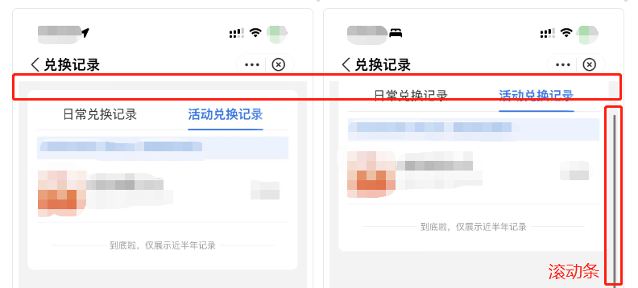

TL;DR：移动端web页面顶上如果有空隙的话，可以对页面父元素用 padding 或者加空元素防止因 margin 塌陷造成的不正常滚动。
起源
强迫症同学有没有注意到，很多小程序的页面，明明不超过一页，但是却可以滚，但又只能滚一点点。
比如这个：

这种不符合预期的滚且只能滚一点点很难受，于是去探索到底是什么导致了这个小滚动的出现。
用开发者工具去尝试找这个空隙是找不到的，但是能发现有这种表现的，无一不是最顶上的元素使用了 margin-top。
原因
在较长一段时间里，遇到这个问题的时候，会选择靠不在第一个元素上使用margin-top来规避这个问题的。
有一天浏览微信开发者社区，发现也有同学有类似的问题。
微信小程序答疑同学表示这是： margin-top 垂直方向塌陷导致的
顺便给出了解决方案：
1 | <!--在第一个元素前加这样一个空元素--> |
试过了，很好用。但是交互强迫症满意了，代码强迫症犯了，页面最顶上要加这么个玩意儿？？？？
这时可以注意到关键字，margin塌陷。搜索后才发现原来塌陷不光是曾经理解的两个元素间的margin会塌陷。元素套元素也会，看掘金的文章 - 什么是margin塌陷及解决方案。
优雅
所以其实关键是解决塌陷，加个空元素只是个手段。那有没有更优雅的手法？
上面掘金的文章说可以用 BFC 来解决，写了好几种方法触发BFC：
- float 属性为 left / right
- overflow 为 hidden / scroll / auto
- position 为 absolute / fixed
- display 为 inline-block / table-cell / table-caption
看起来 overflow: auto 是最安全的，给 page 加个这个能有什么坏处呢？
在全局的 CSS 里给 page 元素加上这个样式，大功告成。
转折
overflow: auto 并不是完全无害的， 加了这个会导致页面里的 position: sticky 失效。
position: sticky 要求父级元素不能有任何 overflow:visible 以外的overflow设置，否则没有粘滞效果。因为改变了滚动容器（即使没有出现滚动条）。
更多细节可以看张鑫旭的文章 - position:sticky
结论
也许我们可以因地制宜地选择某些方法触发 BFC 来解决这个问题。但是如果需要选择，不如固定一种无害写法，虽然可能有点丑，但是能解决问题。
遇到此问题时，直接在页面元素最前面加上 <view style="content: ''; overflow: hidden;"></view> 来进行解决吧。